Geometry of Field Data in Memory
Geometry Properties
Fields living on the four-dimensional lattice are defined to be C arrays of elements using the data structures in the corresponding section. The geometry of the lattice is defined by assigning an index 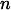 of the array to each site 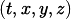. The mapping between the cartesian coordinates of the local lattice and the array index is given by the macros iup(n,dir) and idn(n,dir) which, given the index of the current site, return the index of the site whose cartesian coordinate in direction dir is increased or decreased by one respectively.
Geometry Descriptor
In the MPI version of the code the lattice is broken up into local lattices in addition to an even-odd preconditioning forming blocks of data in memory. Each of these blocks then corresponds to a contiguous set of indices. As a result, we need to additionally allocate field memory for buffers that we can use to send and receive information between different cores and nodes. In order to communicate correctly, we need to first fill the buffer of data to be sent. The division of the local lattice into blocks, the location of the different buffers and buffer copies are described in the following C structure in Include/geometry.h.
typedef struct _geometry_descriptor
{
int inner_master_pieces;
int local_master_pieces;
int total_spinor_master_pieces;
int total_gauge_master_pieces;
int *master_start, *master_end;
int master_shift;
int ncopies_spinor;
int ncopies_gauge;
int *copy_from, *copy_to, *copy_len;
int copy_shift;
int nbuffers_spinor;
int nbuffers_gauge;
int *rbuf_len, *sbuf_len;
int *rbuf_from_proc, *rbuf_start;
int *sbuf_to_proc, *sbuf_start;
int gsize_spinor;
int gsize_gauge;
int *fuse_mask;
int fuse_gauge_size;
int fuse_inner_counter;
} geometry_descriptor;
Global Geometry Descriptors
Usually, we want to initialize fields either on the full lattice or only with even or odd parity. In order to do this efficiently, the global geometry descriptors glattice, glat_even and glat_odd are initialized globally on host memory. These can then be used to allocate fields correspondingly
Number of Sites
In order to allocate memory for the field data, we need to know how many elementary field types we need to allocate. This is different for fields that are located on the sites or the links of the lattice. Correspondingly, for the given lattice geometry, the number of sites and the number of links are calculated and saved in the fields gsize_spinor and gsize_gauge respectively.
Master Pieces
A piece is called master if it does not contain copies of other sites, as for example is the case for buffer pieces. These are copies of sites already stored in a master piece.
The sites in a master piece can be categorized by their function in computation and communications.
Bulk elements/inner elements
Function in computation: Computation performed on bulk elements does not need communication because the sites in the bulk only depend on sites on the boundary, which are already accessible from the thread.
Function in communication: No sites any of the local lattices in other threads depend on the sites in the bulk of this lattice, they do not need to be communicated.
Boundary Sites, which are sites located on the boundary of the local block
Function in computation: The boundary element need to be calculated separately from the bulk, because they depend on sites in the extended lattice and these elements need to be communicated first.
Function in communication: Boundary elements of a local lattice are halo elements of another. As a result, they need to be communicated.
Halo Elements/Receive buffers, the bulk and boundary plus halo form the extended lattice.
Function in computation: Halo elements are only accessible to the thread in order to perform the calculations on the boundary, usually, we do not want to perform calculations on the halo. One exception, however, is, if the computation is faster than the communication, it might be easier to perform the operations on the extended lattices without communication, rather than only computing for bulk and boundary and then synchronize the extension.
Function in communication: We synchronize the extended lattice by writing to it so that this data is available to the current thread, but never read from and communicate the extended lattice somewhere else.
The following figure depicts these categories of sites on a two-dimensional 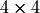-lattice.
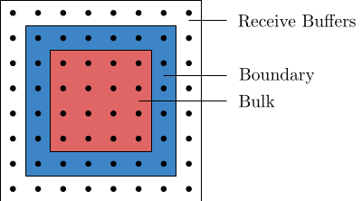{kind=link}
A single boundary communication between two 2D local lattices would accordingly work as in the following illustration

Here the boundary elements are being communicated to the respective boundary of the other block. Bulk elements are unaffected.
Inner Master Pieces
The first decomposition of the lattice site is the even-odd preconditioning. This splits any lattice in two pieces: an even and an odd one. These pieces are stored contiguously in memory meaning that at the first indices one can only read sites of the even lattice and after an offset we are only reading odd sites. For an even-odd preconditioned lattice the number of inner master pieces is therefore two and can be accessed in the variable inner_master_pieces of the geometry descriptor. In this context, an inner master piece comprises all sites that are in the bulk of a local lattice of given parity.
Resultingly, there is a shift in the local master piece block that is the starting index of the odd sites. For this, one can use the field master_shift. This field contains the offset of a lattice geometry relative to the full lattice. The even lattice is not offset and overlaps with the first half of the full lattice. The odd lattice, however, overlaps with the last half, so it is offset by half the number of lattice points compared to the full lattice. As a result, the odd lattice geometry, saved in the global variables as &glat_odd has the master_shift agreeing with the first index of the odd block of the full lattice.
int shift_full = glattice->master_shift /* = 0 */
int shift_even = glat_even->master_shift /* =0 */
int shift_odd = glat_odd->master_shift /* not 0, index of first odd entry */
which corresponds to a full lattice being decomposed like the following illustration:
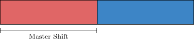{kind=link}
Local Master Pieces
The local master pieces are the pieces of local lattices, the blocks that the lattice is decomposed into to be processed either by a single thread/core or GPU. For example, take a lattice of size 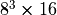 split up with an MPI layout of 1.1.1.2 into two local lattices of size 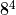. Due to the even-odd preconditioning the blocks are further split up into two. The field local_master_pieces identifies the number of local master pieces. In this case the integer saved in local_master_pieces is equal to four. This is saved in memory in the following way: First the even parts of the two blocks and then the odd parts.
{kind=link}
Total Master Pieces
Additionally, the geometry descriptor contains two numbers of total master pieces, one for spinors and one for gauge fields. This counts the number of local master pieces plus the number of receive buffers, but not send buffers. This is exactly the extended lattice in the directions that are parallelized, i.e. the global lattice is split in this direction. Iterating over the total number of master pieces equates therefore to an iteration over the local lattices including their halo regions.
The number of interfacing elements does not only depend on this decomposition but also whether the saved field is saved on the lattice links or sites. Consequently, while the master pieces are identical, the buffer structure depends on whether the field that needs to be communicated is a gauge field or a spinor field. For this, the geometry descriptor contains both an integer for the total number of master pieces for a spinor field and the total number of master pieces for a gauge field. Additionally, there are fields that contain corresponding counts of buffers for both field geometries, nbuffers_spinor and nbuffers_gauge.
Block Arrangement in Memory
In order to work with the block structure efficiently and optimize memory access patterns, the sites belonging to a single piece are stored consecutively in memory. Since the field data is stored in a one-dimensional array, we can access the sites stored in a block by consecutive indices. As a result, in order to access all sites in a block, we need to know the index where it starts and where it ends. This information is stored in the arrays master_start and master_end.
Here, every block is identified by an index, in the code often called ixp. The mapping of the index to the block is persistent but arbitrary and therefore subject to convention. In memory, and correspondingly at site index level, the blocks are stored such that first there is a large block of field data of local lattices with even parity and then with odd parity. However, at block index level, the even ixp identify even lattices and odd ixp odd lattices, with lattices of two parities belonging to the same local lattices adjacent. This means for example, that if the even part of my local lattice is stored at ixp=4, then the odd part can be found at ixp=5. For a simple decomposition into two blocks with even-odd preconditioning are arranged in memory as in the following illustration
{kind=link}
with block indices being assigned in a non-contingent way described above.
In order to find the starting index of a piece with index 5 belonging to a decomposed spinor field, one would write
spinor_field s = /* initialize a field */
int index_start = s->type->master_start[5];
One could find out the length of the block, which is not necessarily constant, by writing the following
int block_length = s-type->master_start[5] - s->type->master_end[5] + 1;
OpenMP
The integers
int *fuse_mask;
int fuse_gauge_size;
int fuse_inner_counter;
are necessary for optimizing communications between cores on a single node.
Optimizing Communications
As already described the local blocks decompose further into even and odd pieces, sites of the halo, boundary and bulk. We want to access these pieces separately, because they have different roles in computation and communication. Manipulating these different elements in the field data therefore requires different code. However, in order to conserve optimal access patterns, every data access has to be an access to a single block of contiguous memory. When storing all sites in the extended lattice naively, one might have to access multiple blocks of memory for a particular computation or communication step. This negatively impacts memory access performance due to suboptimal bus-utilization, data reuse and automatic caching patterns. The challenge is, therefore, to arrange the sites in memory in such a way that every memory access is an access to a single continguous block of memory.
As a result, we want to store the data in a local block first of all in such a way, that the inner sites are all consecutive, are then followed by boundary elements and finally halo elements/receive buffers.
Boundary and Receive Buffers
Here in particular the arrangement of the boundary elements is crucial, because different overlapping parts of the boundary are requested by different nodes. At this point, we do not need to worry about the concrete arrangement of points in the bulk, because computations on the inner points can be executed in a single block, a caveat being discussed in the next section.
We arrange memory as in the following 4-by-4 2D example

The lattice is decomposed into an even and an odd part, which are contiguous in memory respectively. The first index with an odd entry, the master shift of the odd lattice, is 17.
The bulk consists for each sublattice of only two sites. Sites 0-1 and 17-18 are the inner sites of the even and odd lattice respectively.
We do not need to consider the edges of the square in the extended lattice, because they are not used in any computations, since they are not neighbors to any of the sites in the local lattice.
For the even lattice we walk around the inner sites to label the boundary elements. If this local lattice is parallelized in both dimensions, then we need to exchange all boundary elements with other nodes. 2-3 with another node, then 4-5 and then 5-6. These three memory accesses do no pose a problem, since they are continguous. However, the next send buffer will try to access elements 7 and 2. These are not contiguous. As a result, we have to allocate space for site 2 twice, so that we can copy it, to a site with index 8. We have to make sure that whenever we need this information, it is in sync with the information stored at site 2.
We can now proceed to label the receive buffers. Here we want the memory that we write to again be contiguous. This works out naturally, the receive buffers are 9-10, then 11-12, then 13-14 and finally 15-16.
Proceed analogously for the odd lattice. In contrast to the even lattice, we do not have any holes in the numbering.
Bulk Arrangement
As mentioned above, inner elements are always accessed as a block in memory and therefore the accesses are continguous. However, the order of access can have an impact on L1 and L2 caching and therefore the speed of memory transfer. Caching is optimal, if the bulk elements are subdivided into smaller block elements. This is implemented under the name path blocking. The dimensions of the bulk subblocks are stored in the global variables (Include/global.h)
/*path blocking size*/
GLB_VAR(int,PB_T,=2);
GLB_VAR(int,PB_X,=2);
GLB_VAR(int,PB_Y,=2);
GLB_VAR(int,PB_Z,=2);
as PB_T, PB_X, PB_Y and PB_Z. On a 6-by-6 2D lattice PB_X=2 and PB_Y=2 would imply a decomposition as in the following illustration
{kind=link}
Buffer Synchronization
For complex decompositions, that are usual in lattice simulations, the blocks have to communicate in a highly non-trivial way. For example decomposing a 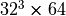 lattice into local lattices requires 512 processes to communicate the three dimensional surfaces of each four-dimensional local lattice with all interfacing blocks. In order to perform this communication we need to know both the indices of the sending blocks and map them to the receiving blocks. This information is stored in the arrays rbuf_from_proc and sbuf_to_proc, which tell us which processes send to which processes by id, and further the arrays rbuf_start and sbuf_start, which tell us at which index in the local lattice we need to start reading. We can iterate through these arrays to find pairs of sending and receiving processes and perform the communication. The size of the memory transfer is further stored in the array sbuf_len and rbuf_len.
The number of copies necessary depends on whether the field is a spinor field or gauge field and saved in the fields nbuffers_spinor and nbuffers_gauge.
Field Operations
Even-Odd Decomposition
CPU
A sufficiently local operator only operates on the site value and its nearest neighbors. As a result, we can decompose the operation into a step that can be executed site by site and is therefore diagonal and another step where every site only depends on the nearest neighbors. This we can further decompose into two steps, one acting on the even lattice sites while the odd sites are frozen and then another step acting on the odd lattice sites while the even ones are frozen. As a result, this decomposition enables us to effectively evaluate local operators on the lattice because it can be done in parallel, using multiple CPU cores or GPUs. In order to efficiently work with this decomposition on the CPU and the GPU, the even and odd sites are stored in separate blocks on the lattice. This means for the CPU that for a field that is defined on both even and odd sites, one can easily iterate through the even sites by iterating through the first half of the allocated memory.
For example, for spinor fields, iterating through the even sites mechanically works as in the following:
#include "global.h"
#include "spinor_field.h"
#include "suN_types.h"
#include "memory.h"
int main(void)
{
spinor_field *s;
s = alloc_spinor_field_f(1, &glattice);
int lattice_volume = T*X*Y*Z;
for (int i = 0; i < lattice_volume/2; ++i)
{
suNf_spinor *site = s->ptr + i;
}
}
We only iterate through half the lattice points. Iterating through the odd sites requires us to know the offset at which the odd indices begin. All information regarding lattice geometry is stored in the geometry descriptor.
#include "global.h"
#include "spinor_field.h"
#include "suN_types.h"
#include "memory.h"
int main(void)
{
spinor_field *;
s = alloc_spinor_field(1, &glattice);
int lattice_volume = T*X*Y*Z;
int offset = glat_odd->master_shift;
for (int i = offset; i < lattice_volume; ++i)
{
suNf_spinor *site = s->ptr + i;
}
}
In practice, the programmer should not be forced to think about lattice geometry. For this, the corresponding for loops are replaced by the macros _PIECE_FOR, _SITE_FOR and _MASTER_FOR that are defined in Include/geometry.h.
_MASTER_FOR
This macro iterates over all sites without considering which piece they are located. For example, for the spinor field, this would simplify to
#include "global.h"
#include "spinor_field.h"
#include "suN_types.h"
#include "memory.h"
#include "geometry.h"
int main(void)
{
spinor_field *s;
// Allocate spinor that is defined on all sites
s = alloc_spinor_field(1, &glattice);
_MASTER_FOR(s->type, ix)
{
suNf_spinor *site = s->ptr+ix;
}
}
Take  to be the number of lattice sites. Then
to be the number of lattice sites. Then ix runs from 0 to 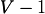. If the lattice geometry is given as even, it runs from 0 to 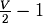. If it is odd, it runs from 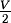 to . It is possible to iterate over an even spinor in the following way
#include "global.h"
#include "spinor_field.h"
#include "suN_types.h"
#include "memory.h"
#include "geometry.h"
int main(void)
{
spinor_field *s;
// Allocate even spinor
s = alloc_spinor_field(1, &glattice);
_MASTER_FOR(s->type, ix)
{
suNf_spinor *site = s->ptr+ix;
}
}
Nevertheless, iterating over an odd spinor the same way will yield a segmentation fault. This is because, in the odd spinor, only the odd sites are allocated starting at 0. As a result, we need to iterate from 0 to for the odd spinor. This, however, clashed with the fact that if we have a spinor that is defined on all lattice sites, we want to have the indices start at . \par
To solve this problem, instead of accessing the elements directly, there is a macro that correctly accesses given a global index provided by either _SITE\_FOR or _MASTER_FOR: _FIELD_AT in Include/spinor_field.h.
The right way to iterate over any geometry is to use the following pattern, with the corresponding geometry substituted in the allocation function.
#include "global.h"
#include "spinor_field.h"
#include "suN_types.h"
#include "memory.h"
#include "geometry.h"
int main(void)
{
spinor_field *s;
// Allocate odd spinor
s = alloc_spinor_field(1, &glat_odd);
_MASTER_FOR(s->type, ix)
{
suNf_spinor *site = _FIELD_AT(s, ix);
}
}
_PIECE_FOR Depending on the operation we need to perform on the field, we might need to know whether we are currently operating on the even or the odd part of the field. Leaving aside MPI decomposition, which will be explained later, the field is decomposed into only two pieces: The odd and the even part. If the spinor is only odd or even and there is no further MPI decomposition, there will be only a single piece. An index labels the pieces often called ixp in the order they appear in memory. Therefore (without any MPI decomposition), the even part has the index ixp=0, and the odd part ixp=1.
#include "global.h"
#include "spinor_field.h"
#include "suN_types.h"
#include "memory.h"
#include "geometry.h"
int main(void)
{
spinor_field *s;
s = alloc_spinor_field(1, &glattice);
_PIECE_FOR(s->type, ixp)
{
printf("Operating on piece: %d\n", ixp);
}
}
_SITE_FOR We can now decompose the _MASTER_FOR into _PIECE_FOR and _SITE_FOR. This might be necessary if we want to iterate over the sites and always have the information on which piece we are currently operating.
#include "global.h"
#include "spinor_field.h"
#include "suN_types.h"
#include "memory.h"
#include "geometry.h"
int main(void)
{
spinor_field *s;
s = alloc_spinor_field(1, &glattice);
_PIECE_FOR(s->type, ixp)
{
_SITE_FOR(s->type, ixp, ix)
{
printf("Operating on piece %d at index %d\n", ixp, ix);
}
}
}
GPU
We will not want to use any for-loop macros to iterate over the sites on the GPU. Instead, we want to distribute the operations on the sites over different threads. Further, in anticipation of a later MPI decomposition, any kernel operation on the fields should launch a separate kernel for each piece. At the point of a simple even-odd decomposition, we need to do the following:
Wrap the kernel call in
_PIECE_FOR. This will take care of any block decomposition identically to the CPU.Only pass the odd or even block to the kernel at the correct offset. The global thread/block index will then be used to iterate over the sites, and we do not need to worry about any global indices. All the kernel knows about is the block. This serves as a replacement of
_SITE_FOR.Read out the field value for a given local block index having only the offset starting pointer at hand. Due to the special memory structure discussed in the next section, this has to be done using the GPU reading, and writing functions declared in
Include/suN.h. These serve as a replacement to_FIELD_AT. They are not completely analogous because, depending on the structure, they do not read out the complete site. For the spinor field, for example, the reading must be done spinor component-wise.
For a spinor field in the fundamental representation, one would use the function read_gpu_suNf_vector because the components of the spinor are vectors, and it is necessary to read the spinor vector-wise. Further, to only pass the block the kernel is supposed to operate on, we are using the macro _GPU_FIELD_BLK in Include/gpu.h. This macro takes the spinor field and the piece index ixp and returns the starting pointer of the local block in the GPU field data copy.
#include "global.h"
#include "spinor_field.h"
#include "suN_types.h"
#include "memory.h"
#include "geometry.h"
int main(void)
{
// Define grid size and block size for kernel execution
int grid_size = // number
int block_size = // number
// Stride that separated even and odd sites in memory is half the
// number of lattice points
int vol4h = T*X*Y*Z/2;
/
spinor_field *s;
s = allocate_spinor_field_f(1, &glattice);
// Piece for is used identically to the CPU
_PIECE_FOR(s->type, ixp) {
// Local block is passed using _GPU_FIELD_BLK
example_kernel<<<grid_size, block_size>>>(_GPU_FIELD_BLK(s,ixp), vol4h);
}
}
__global__ void example_kernel(suNf_spinor *s, int vol4h, int block_size)
{
// Local index on the block
int ix = blockIdx.x * blockDim.x + threadIdx.x;
suNf_spinor* site;
// Only perform the operation if the index is on the block
if (ix < vol4h)
{
// Read out the spinor component-wise
for (int component = 0; component < 4; component++)
{
read_gpu_suNf_vector(vol4h, (*site).c[component], s, ix, component);
}
}
}
Reading an element of the gauge field is slightly different. We can transfer the loop over the different pieces, but since the gauge field is a vector field, we have more components to consider. Therefore we need to replace _GPU_FIELD_BLK with _GPU_4FIELD_BLK. For the gauge field the readout functions is simply read_gpu_suNf, which is also located in suN.h. This function reads out the vector component-wise.
#include "global.h"
#include "spinor_field.h"
#include "suN_types.h"
#include "memory.h"
#include "geometry.h"
int main(void)
{
// Define grid size and block size for kernel execution
int grid_size = // number
int block_size = // number
// Stride that separated even and odd sites in memory is half the
// number of lattice points
int vol4h = T*X*Y*Z/2;
suNf_field *u;
u = allocate_gfield_f(&glattice);
// Piece for is used identically to the CPU
_PIECE_FOR(s->type, ixp) {
// Local block is passed using _GPU_4FIELD_BLK
example_kernel<<<grid_size, block_size>>>(_GPU_4FIELD_BLK(u,ixp), vol4h);
}
}
__global__ void example_kernel(suNf_spinor *s, int vol4h, int block_size)
{
// Local index on the block
int ix = blockIdx.x * blockDim.x + threadIdx.x;
suNf* site;
// Only perform the operation if the index is on the block
if (ix < vol4h)
{
for (int direction = 0; direction < 4; direction++)
{
read_gpu_suNf(vol4h, *site, s, ix, direction);
}
}
}
The writing functions work analogous.
Contingency
These reading and writing functions are necessary to access memory in a contingent way when performing operations on the fields. If we store the spinors in the same way they are stored on the CPU this will not be contingent. To understand the problem, we can look at the implementation of the inner product of two spinors at the kernel level.
// <s1,s2>
template< typename COMPLEX>
__global__ void spinor_field_prod_gpu(COMPLEX* s1, COMPLEX* s2, hr_complex* resField, int N)
{
for (int i = blockIdx.x * blockDim.x + threadIdx.x;
i < N;
i += blockDim.x * gridDim.x)
{
resField[i] = _complex_prod(s1[i],s2[i]);
}
}
In every thread we iterate over the components of the input arrays s1 and s2. Which are located at the same site. The different threads in this kernel now operate on the different sites of the lattice. Now, when this kernel is launched, the threads all try first to access all the first elements of all sites. However, when the sites are stored identically as on the CPU, this means that we access memory segments separated by a stride, as in the following illustration:

We can optimize this significantly by not saving one site after another but instead saving first all first components, then all seconds components and so on in the order they are accessed in the loop.
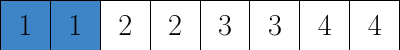{kind=link}
This means that memory is accessed contiguously as a single block. This is more efficient because it maximizes bus utilization and L1 cache hit rate.
Spinor Fields
At a code level, this is achieved by requesting the start pointer at a given index as usual, then performing a cast to the corresponding complex type and writing or reading from memory a stride away. For example, if one wanted to read out the second component of the first component vector of a spinor on the CPU, one would do that as follows
#include "spinor_field.h"
#include "suN.h"
#include "random.h"
#include "memory.h"
int void(main)
{
spinor_field *field;
field = alloc_spinor_field_f(1, &glattice);
gaussian_spinor_field(field);
suNf_spinor *s;
int ix = 5; // For example
s = field->ptr + ix;
// Access second vector component of first spinor component
hr_complex component = s.c[0].c[1];
}
On the GPU, this would be done in the following way
#include "spinor_field.h"
#include "suN.h"
#include "random.h"
#include "memory.h"
int void(main)
{
// Initialize a random spinor field
spinor_field *field;
field = alloc_spinor_field_f(1, &glattice);
gaussian_spinor_field(field);
spinor_field_copy_to_gpu_f(field);
// Kernel launch parameters
int block_size = // plug in value
int grid_size = // plug in value
// The stride by which the components are separated
// First we save the even sites component wise and then
// the odd sites component wise.
int stride = T*X*Y*Z/2;
example_kernel<<<grid_size, block_size>>>(field->gpu_ptr, stride);
}
__global__ void example_kernel(suNf_spinor *start, int stride)
{
int ix = blockIdx.x * blockDim.x + threadIdx.x;
// Cast to a complex pointer. On the CPU start_as_complex++ would give us
// the next component. Here we need to jump by a stride
hr_complex *start_as_complex = (hr_complex*)start;
// We can read out the first component using the index, because the first
// components are arranged in a block of complex numbers of half the
// lattice size.
hr_complex first_component = start_as_complex + ix;
// The second component is removed from the first component by the stride.
hr_complex second_component = first_component + stride;
}
This shuffles how the structs are organized in the previously allocated space.
Gauge Fields
For the gauge fields for every site, there are four link directions. Since the matrices stored on the links can be complex or real, the real and imaginary part of the matrices are additionally separated by a stride.